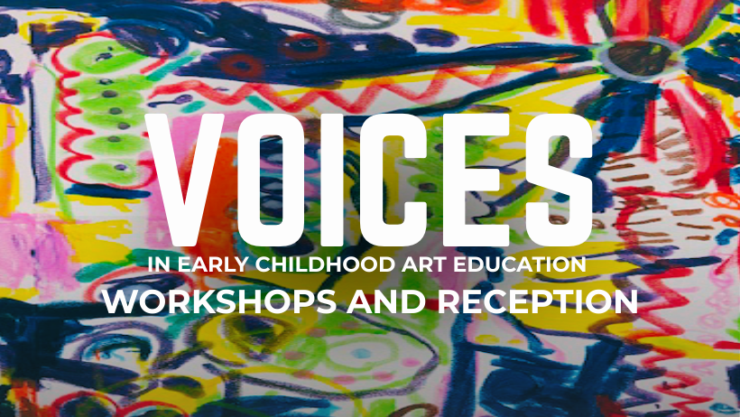

NAEA ECAE: VOICES | Workshop and Reception
The National Art Education Association (NAEA) Early Childhood Art Educators Interest Group (ECAE) presents an international exhibition celebrating the creative voices of young children ages 2–6 and the caregivers who learn alongside them. Featuring work from 20 diverse early childhood art education programs, the exhibition brings together contributions from public and private schools, museums, and community-based organizations across the U.S. East Coast, the Southwest, and beyond. Participating educators and collaborators include art teachers, atelieristas, classroom teachers, museum educators, and parents and family members.
Centering young children’s perspectives, Voices honors their artistic thinking as meaningful and powerful contributions to our educational and cultural communities. The exhibition weaves together multimedia artworks with documentation—including photographs, texts, and video—to share the questions, experiments, and moments of discovery unfolding within each learning environment.
Join us on March 7 for a morning of making, conversation, and celebration in connection with Voices. The Interactive Workshop (10:00 AM–12:00 PM) invites educators, families, and community members to engage hands-on with materials and ideas inspired by the exhibition, centering curiosity, play, and creative exploration.
Following the workshop, all are warmly invited to stay for the Reception (12:00–2:00 PM), a time to gather, reflect, and celebrate the artistic voices of young children and the educators and caregivers who support them. Light refreshments will be served as we come together to honor the creativity, relationships, and learning shared throughout the exhibition.
RSVP here: https://forms.fillout.com/t/3qqXZhREdAus
The exhibition coincides with the 2026 NAEA Conference.